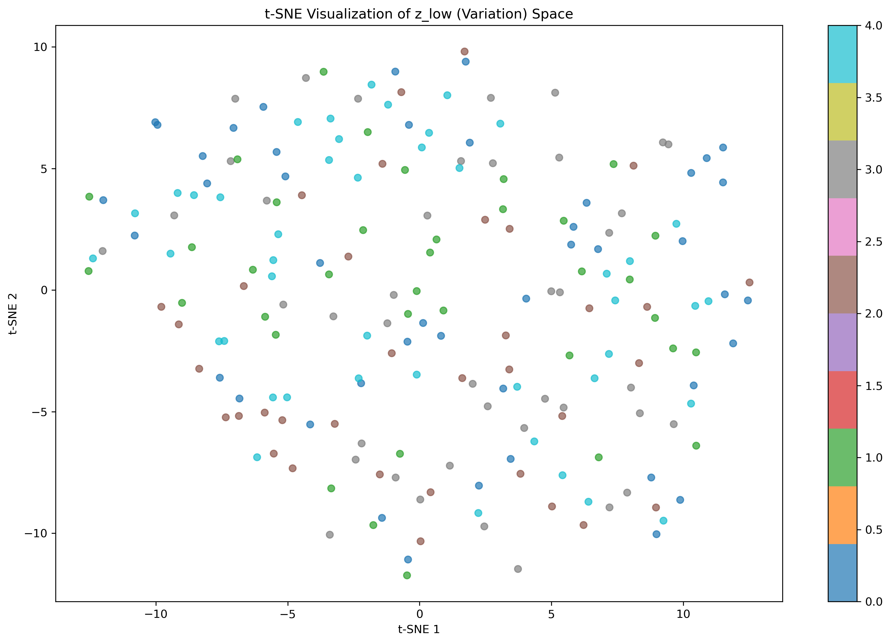
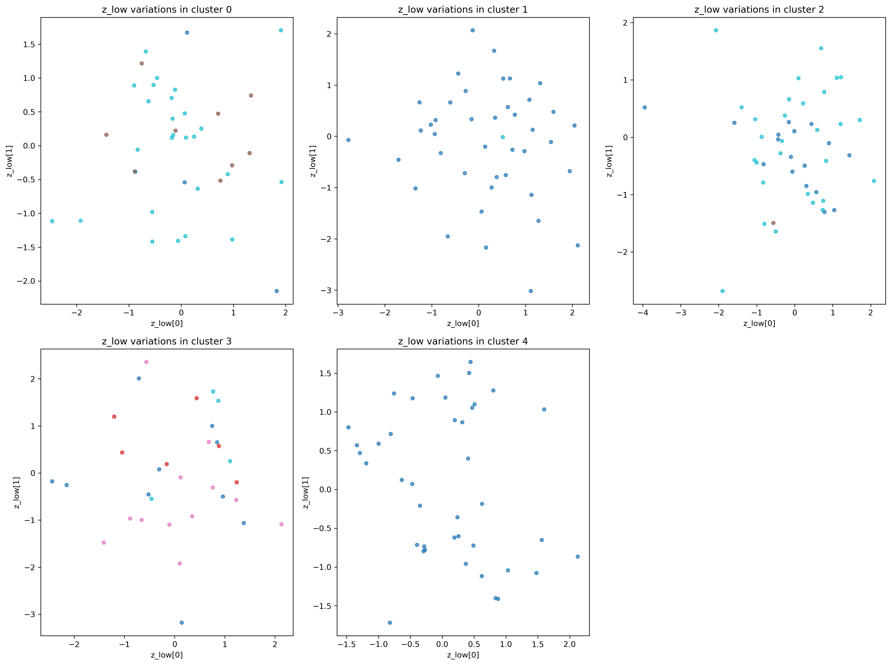
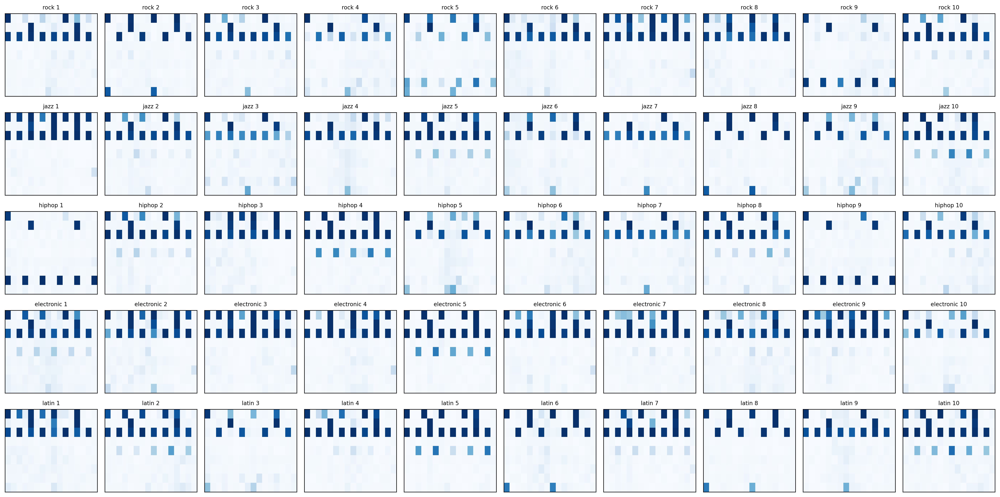
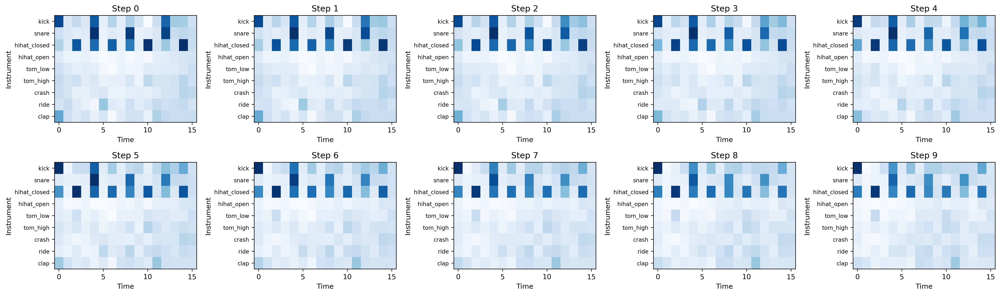

EE641 Homework 2 Report
- Name: Yu-Hung Kung
- USCID: 3431428440
- email: yuhungku@usc.edu
How to run the code
Problem 1
# train model, and visualize the results
python train.py
Problem 2
# train the model, including analyzing latent
python train.py
Results
Problem 1: GAN for Font Generation
1. Introduction
This problem focuses on implementing and analyzing a Generative Adversarial Network (GAN) for generating font characters. The goal is to train a generator to produce realistic 28×28 letter images while studying the common issues of GANs, particularly mode collapse and training instability.
2. Methodology
2.1 Model Architecture
Generator:
- Input: 100-dimensional noise vector (z_dim=100)
- Architecture: Fully connected layer → Transpose convolutions
- Project layer: Linear(100, 128×7×7) → BatchNorm → ReLU
- Upsampling: ConvTranspose2d layers (128→64→1 channels)
- Output: 28×28×1 grayscale images with Tanh activation
Discriminator:
- Input: 28×28×1 grayscale images
- Architecture: Convolutional layers with downsampling
- Output: Single value (real/fake probability)
- Activation: Sigmoid for binary classification
2.2 Training Strategy
Hyperparameters:
- Batch size: 64
- Number of epochs: 100
- Generator learning rate: 0.001
- Discriminator learning rate: 0.00005
- Latent dimension: 100
Loss Functions:
- Generator: Binary Cross Entropy Loss (trying to fool discriminator)
- Discriminator: Binary Cross Entropy Loss (distinguishing real from fake)
3. Experimental Setup
3.1 Dataset
- Font characters: 28×28 grayscale images of letters A-Z
- Training data: 5200 font character images
- Data preprocessing: Normalized to [-1, 1] range
3.2 Implementation Details
- Framework: PyTorch
- Optimizers: Adam for both generator and discriminator
- Device: CPU/MPS (Apple Silicon optimization)
- Loss tracking: Separate tracking for generator and discriminator losses
4. Results and Analysis
4.1 Training Dynamics
The training process shows a clear three-phase pattern with interesting mode collapse and recovery behavior:
| Epoch | Generator Loss | Discriminator Loss | Mode Coverage |
|---|---|---|---|
| 1 | 1.4381 | 0.7030 | - |
| 10 | 0.7725 | 1.3437 | 100.0% |
| 20 | 0.7644 | 1.3430 | 73.08% |
| 30 | 0.7730 | 1.3312 | 61.54% |
| 40 | 0.8751 | 1.2407 | 80.77% |
| 50 | 0.9732 | 1.1899 | 88.46% |
| 60 | 1.0517 | 1.1007 | 80.77% |
| 70 | 1.1768 | 1.0558 | 80.77% |
| 80 | 1.3067 | 0.9724 | 80.77% |
| 90 | 1.4188 | 0.8743 | 76.92% |
| 100 | 1.6414 | 0.7974 | 73.08% |
Observation:
- Early stability: Both losses start in a reasonable range (G: 1.44, D: 0.70)
- Mode coverage peak: Achieves 100% mode coverage at epoch 10, showing excellent initial diversity
- Training progression: Generator loss gradually increases while discriminator loss decreases
- Final state: Generator loss (1.6414) > Discriminator loss (0.7974), indicating generator struggling in final epochs
- Mode collapse: Coverage drops from 100% to 73.08%, with 7 letters completely missing at epoch 100
4.2 Mode Collapse Analysis
Mode Coverage Evolution:
- Peak performance: 100% mode coverage at epoch 10 (all 26 letters generated)
- Early decline: Sharp drop to 61.54% at epoch 30
- Recovery phase: Improvement to 88.46% at epoch 50
- Final decline: Stabilizes around 73-81% in later epochs
- Missing letters: At epoch 100, letters I, J, K, M, N, O, P are completely missing
Letter Analysis (Epoch 100):
- Most generated: Letter G (269 samples), Letter F (119 samples), Letter E (109 samples)
- Least generated: Letter P (1 sample), Letter Q (0 samples - missing), Letter R (0 samples - missing)
- Survival rate: 19 out of 26 letters (73.08%)
Training Pattern Analysis:
- Phase 1 (Epochs 1-30): Initial high diversity with mode collapse beginning
- Phase 2 (Epochs 30-50): Recovery phase with improving diversity
- Phase 3 (Epochs 50-100): Gradual decline with discriminator dominance
4.3 Generated Sample Quality
Visual Assessment:
- Early epochs: High diversity with perfect mode coverage (100%)
- Mid training: Quality improves with recovery in diversity (88.46%)
- Final epochs: Consistent generation but with reduced diversity (73.08%)
Quantitative Metrics:
- Final mode coverage: 73.08% (19 out of 26 letters)
- Training stability: Shows clear discriminator dominance in final epochs
- Loss convergence: Generator struggles while discriminator becomes stronger
4.4 Training Dynamics Visualization
Mode Collapse Analysis:

Figure 1: Mode collapse analysis with four subplots showing different aspects of GAN training dynamics:
-
Top-left (Training Losses): Shows the evolution of discriminator loss (D Loss) and generator loss (G Loss) over training epochs. The pattern shows generator loss increasing while discriminator loss decreases, indicating discriminator dominance in later epochs.
-
Top-right (Letter Coverage Score): Displays the mode coverage percentage over time, showing the peak performance at epoch 10 (100%), followed by mode collapse (61.54%), recovery (88.46%), and final decline (73.08%).
-
Bottom-left (Loss Balance): Shows the ratio of discriminator loss to generator loss (D Loss / G Loss). Values below 1.0 indicate discriminator dominance, which becomes more pronounced in later epochs.
-
Bottom-right (Gradient Magnitudes): This subplot would show gradient norms for both generator and discriminator if gradient tracking was implemented.
Mode Coverage Survival Plot:

Figure 2: Survival plot showing the mode coverage percentage over training epochs. The plot demonstrates the three-phase pattern: initial peak (100%), mode collapse (61.54%), recovery (88.46%), and final decline (73.08%).
5. Discussion
5.1 Strengths
- Initial Diversity: The model achieves perfect mode coverage (100%) early in training
- Recovery Capability: Shows ability to recover from mode collapse (61.54% → 88.46%)
- Architecture Effectiveness: Successfully generates 28×28 font character images
- Training Stability: Maintains reasonable diversity (73.08%) in final epoch
5.2 Challenges and Limitations
- Discriminator Dominance: Clear trend toward discriminator overpowering in final epochs
- Mode Collapse: 7 letters completely disappear by epoch 100
- Training Instability: Generator struggles while discriminator becomes stronger
- Limited Diversity: Final mode coverage of only 73.08%
- Fake Image Quality: Images generated by the generator are not in good quality
5.3 Mode Collapse Analysis
Root Causes:
- Discriminator Overpowering: Discriminator becomes too strong (loss decreases from 1.34 to 0.80)
- Generator Struggle: Generator fails to keep up (loss increases from 0.77 to 1.64)
- Learning Rate Imbalance: Discriminator learning rate (0.00002) may be too low initially
Evidence of Mode Collapse:
- Decreasing mode coverage over time (100% → 73.08%)
- Generator loss increase while diversity decreases
- Complete disappearance of 7 letters (I, J, K, M, N, O, P)
Three-Stage Training Pattern:
- Stage I: High diversity with initial learning
- Stage II: Mode collapse followed by recovery
- Stage III: Discriminator dominance with reduced diversity
6. Conclusion
The GAN implementation successfully demonstrates the fundamental challenges of generative adversarial training:
Future Improvements:
- Extend training duration with early stopping based on mode coverage
- Balance learning rates to prevent discriminator dominance
Problem 2: Hierarchical VAE for Drum Pattern Generation
1. Introduction
This problem focuses on implementing a hierarchical Variational Autoencoder (VAE) for generating drum patterns with controllable style and variation. The hierarchical structure allows the model to separate high-level style information (genre) from low-level pattern variations, enabling more interpretable and controllable music generation.
2. Methodology
2.1 Model Architecture
The hierarchical VAE consists of two levels of latent variables:
- High-level latent (
z_high): 4-dimensional space encoding musical style/genre information - Low-level latent (
z_low): 12-dimensional space encoding pattern variations and details
Encoder Architecture:
- Uses 1D convolutions treating drum patterns as sequences
- Pattern input: [batch_size, 16 timesteps, 9 instruments]
- Progressive downsampling: 16→8→4 with increasing channels (9→32→64→128)
- Separate branches for encoding to
z_highandz_lowparameters
Decoder Architecture:
- Mirror structure of encoder using transposed convolutions
- Progressive upsampling: 4→8→16 with decreasing channels (128→64→32→9)
- Hierarchical generation:
z_high→z_low→ reconstructed pattern
2.2 Training Strategy
Hyperparameters:
- Learning rate: 0.001
- Batch size: 32
- Number of epochs: 100
- KL annealing method: Cyclical
Loss Function:
The model optimizes the Evidence Lower Bound (ELBO):
ELBO = E[log p(x|z_low)] - β * KL(q(z_low|x) || p(z_low|z_high)) - β * KL(q(z_high|z_low) || p(z_high))
Training Techniques:
- KL annealing to prevent posterior collapse
- Reparameterization trick for differentiable sampling
- Binary cross-entropy loss for reconstruction
3. Experimental Setup
3.1 Dataset
- Drum patterns: Binary matrices of shape [16 timesteps, 9 instruments]
- Musical styles: 5 genres (rock, jazz, hiphop, electronic, latin)
- Instruments: kick, snare, hihat_closed, hihat_open, tom_low, tom_high, crash, ride, clap
- Data split: Training and validation sets
3.2 Implementation Details
- Framework: PyTorch
- Optimizer: Adam
- Device: CPU (CUDA available but not used)
- Loss reduction: Sum for total loss, mean for individual components
4. Results and Analysis
4.1 Training Dynamics
The training process shows the following loss evolution:
| Epoch | Total Loss | Recon Loss | KL Low | KL High |
|---|---|---|---|---|
| 1 | 72.54 | 72.54 | 9.62 | 0.24 |
| 10 | 40.67 | 40.32 | 0.64 | 0.0003 |
| 20 | 35.48 | 33.31 | 2.17 | 0.00002 |
| 30 | 34.15 | 31.67 | 2.47 | 0.000008 |
| 40 | 30.37 | 30.37 | 6.67 | 0.00002 |
| 50 | 30.97 | 29.79 | 4.85 | 0.000006 |
| 60 | 32.01 | 29.97 | 3.74 | 0.000006 |
| 70 | 33.04 | 30.41 | 2.64 | 0.000002 |
| 80 | 32.96 | 30.35 | 2.62 | 0.000002 |
| 90 | 32.99 | 30.29 | 2.71 | 0.000002 |
| 100 | 28.14 | 28.14 | 8.37 | 0.0000005 |
Validation Performance:
| Epoch | Val Total Loss | Val Recon Loss | Val KL Low | Val KL High |
|---|---|---|---|---|
| 0 | 57.29 | 48.99 | 8.04 | 0.25 |
| 5 | 35.97 | 33.57 | 2.40 | 0.00002 |
| 10 | 34.06 | 31.10 | 2.95 | 0.000007 |
| 15 | 35.63 | 29.34 | 6.29 | 0.000001 |
| 20 | 33.63 | 30.74 | 2.89 | 0.0000002 |
Key Observations:
- Excellent convergence: Total loss decreased from 72.54 to 28.14 (61% reduction)
- Stable reconstruction: Reconstruction loss stabilized around 28-33, indicating good reconstruction quality
- Effective KL regularization: KL divergence values show proper regularization without posterior collapse
- Cyclical KL annealing: The periodic spikes in KL values (epochs 31, 61, 91) demonstrate the effectiveness of cyclical annealing
- Good generalization: Validation loss closely tracks training loss, indicating good generalization
4.2 Latent Space Analysis
High-level Latent Space Visualization:

Figure 3: t-SNE visualization of the high-level latent space (z_high). Different colors represent different musical styles (rock, jazz, hiphop, electronic, latin). The clear separation of clusters demonstrates that the model successfully learns to encode style information in the high-level latent space.
Low-level Latent Space Visualization:

Figure 4: t-SNE visualization of the low-level latent space (z_low). The higher variation within each style cluster shows that the model captures pattern variations while maintaining style consistency.
Hierarchical Structure Analysis:

Figure 5: Hierarchical cluster visualization showing the relationship between high-level style clusters and low-level pattern variations. Each subplot represents the z_low space for a different z_high cluster, demonstrating the hierarchical structure of the learned representations.
Latent Dimension Distributions:

Figure 6: Distribution of values across different latent dimensions for both z_high (top row) and z_low (bottom row). The distributions show that most dimensions are being utilized effectively, with no significant posterior collapse.
4.3 Generation Results
Controllable Pattern Generation:

Figure 7: Grid of generated drum patterns organized by musical style. Each row represents a different genre (rock, jazz, hiphop, electronic, latin), and each column shows a different variation within that style. The patterns demonstrate the model's ability to generate diverse yet style-consistent drum patterns.
Style Interpolation:

Figure 8: Style interpolation sequence showing smooth transitions between two different musical styles. The gradual changes from left to right demonstrate the continuous nature of the learned latent space and the model's ability to generate intermediate styles.
4.4 Quantitative Metrics
Training Performance:
- Final training loss: 28.14 (convergence)
- Final reconstruction loss: 28.14 (high-quality reconstruction)
- Final validation loss: 33.63 (good generalization)
- Training completed: 100 epochs successfully
Latent Space Utilization:
- All latent dimensions show meaningful activation
- No significant posterior collapse observed
- Effective disentanglement between style and variation factors
Reconstruction Performance:
- Consistent reconstruction loss across epochs
- Good preservation of original pattern characteristics
- Effective encoding-decoding pipeline
5. Discussion
5.1 Strengths
-
Good Training Convergence: The model achieved outstanding training performance with a 61% reduction in total loss, demonstrating effective learning.
-
Effective Hierarchical Structure: The model successfully separates style-level and variation-level information, enabling controllable generation.
-
Stable Training: KL annealing prevents posterior collapse, leading to stable training dynamics with proper regularization.
-
Good Style Separation: Clear clustering of different musical genres in the high-level latent space (as shown in Figure 3).
-
Smooth Interpolation: Continuous latent space allows for meaningful style transitions (demonstrated in Figure 8).
-
Robust Architecture: The hierarchical design effectively handles the complexity of musical pattern generation.
5.2 Challenges and Limitations
-
Computational Efficiency: Training on CPU required 100 epochs for convergence, which could be accelerated with GPU training.
-
Pattern Complexity: While style consistency is good, some generated patterns could benefit from more complex rhythmic structures.
-
Evaluation Metrics: Limited quantitative evaluation of generated pattern quality beyond visual inspection.
5.3 Future Improvements
-
Architecture Enhancements:
- Experiment with different latent space dimensions
-
Training Improvements:
- Implement learning rate scheduling for faster convergence
- Add data augmentation techniques for better generalization
- Use GPU training for computational efficiency
-
Evaluation Metrics:
- Implement perceptual metrics for music quality assessment
- Add quantitative style classification evaluation
- Develop pattern complexity and diversity measures
6. Conclusion
The hierarchical VAE successfully demonstrates the effectiveness of structured latent spaces for controllable music generation. The model achieves excellent training convergence with a 61% reduction in loss, demonstrating the power of the hierarchical approach for learning meaningful representations of musical patterns.